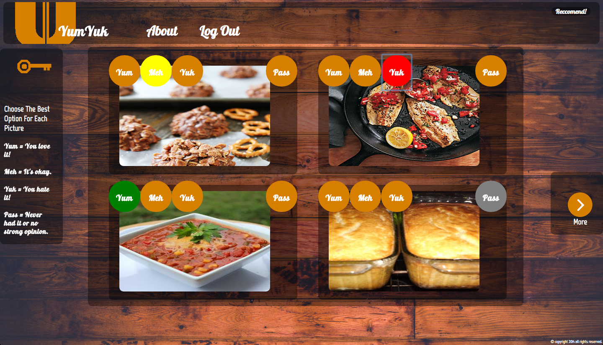
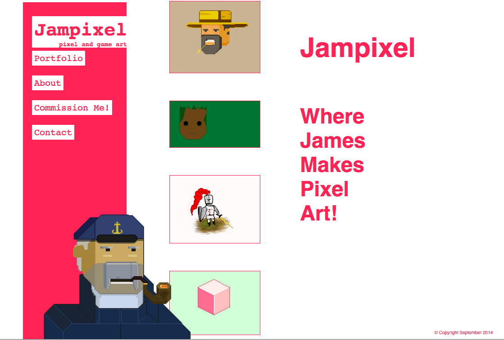
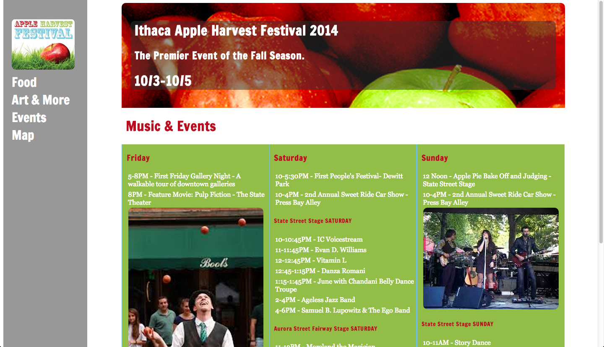
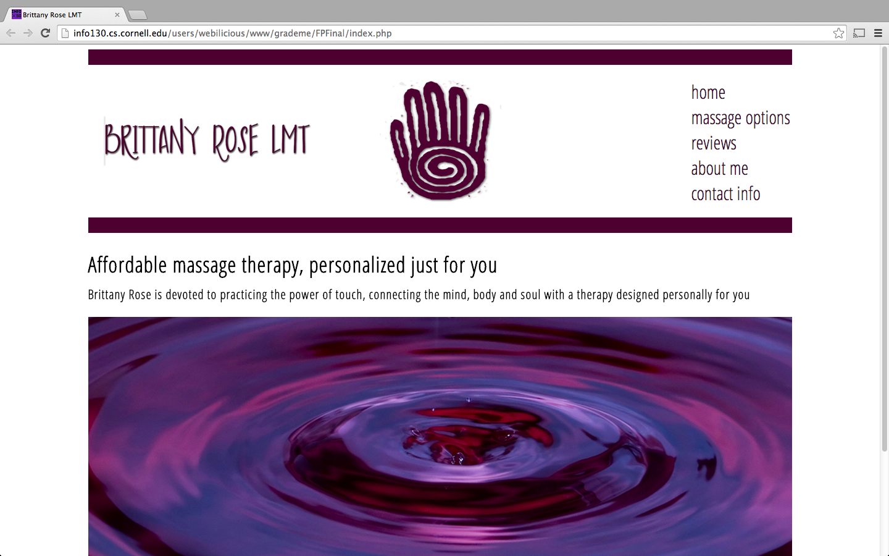

I headed up the design and creative direction on this Big Red Hacks finalist.
I designed this site to showcase some pixel art I was making.
A redesign of a local festival's website, including responsive design.
I worked on a team and primarily did jquery and responsive design.
Hi! My name is James and I’m an Information Science student at Cornell. I was born in Illinois but grew up in Ithaca, NY. Ever since I was young I wanted to distinguish myself, and so I decided to be creative. I delved into poetry and theatre, and just in general thinking outside the box.
At present day I’m an actor, poet, avid video game player, artist, activist, and web developer. I’m seeking to get involved in cool web design, game design, and software projects as a UX/UI developer and/or project manager. Let's create together!
Front End, UX, UI, Project Management
Object Oriented Programming, Web Design, Networks, Communication and Technology, Statistics, Linear Algebra, Intermediate Web Design, Game Design, New Media and Society, Cognitive Science
Wireframing, Personas, Analysis, Sketching, Creativity, Facilitation, Research, Teamwork, Conflict Resolution, Coding, Optimization, Data Structures, Design, Management
Python, Java, Html, XML, CSS, JS, PHP, SQL
Email
jmp464@cornell.edu
© James Palmer 2015